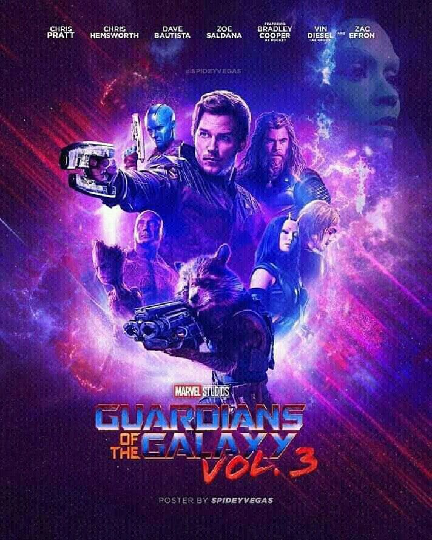

historia
En un futuro lejano, la Tierra ha sido conquistada por una raza alienígena llamada los Badoon. Un grupo de humanos supervivientes se unen para formar Los Guardianes de la Galaxia, una fuerza de resistencia que lucha contra los invasores alienígenas y protege la galaxia de otras amenazas.
El equipo inicial está formado por el líder Peter Quill (también conocido como Star-Lord), el humano modificado genéticamente Vance Astro, el guerrero alienígena Drax el Destructor, el inteligente mapache genéticamente modificado Rocket, y el árbol humanoide Groot.
A lo largo de su historia, Los Guardianes de la Galaxia han enfrentado peligrosos villanos como Thanos, el Titán Loco, y Ronan el Acusador, y han tenido varios miembros nuevos, como la guerrera Gamora, la cibernética Mantis, el personaje de cómic clásico Yondu Udonta, y la guerrera cósmica Phyla-Vell.
A pesar de sus diferencias, el equipo se une para enfrentar cualquier amenaza que se presente, ya sea en la Tierra o en la galaxia. Con su habilidad para trabajar en equipo y su espíritu de aventura, Los Guardianes de la Galaxia se han convertido en un icono de los cómics y han inspirado varias adaptaciones cinematográficas y televisivas.
